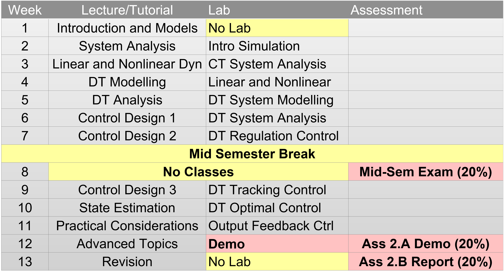
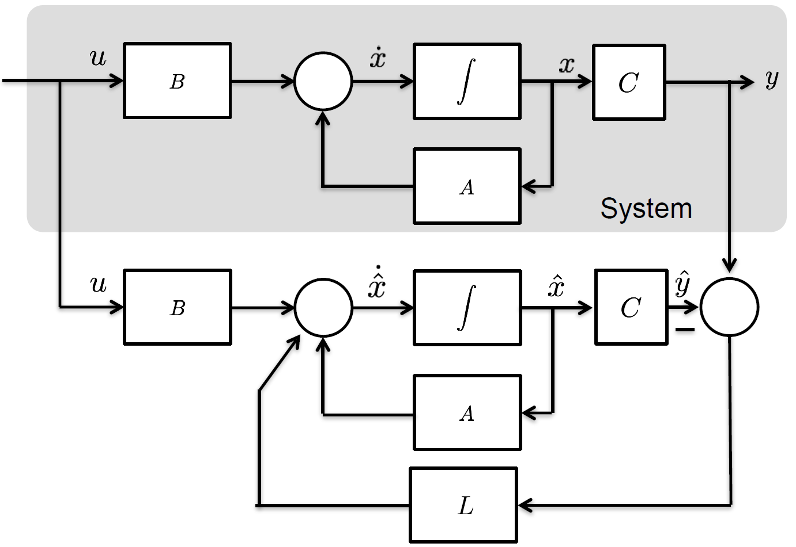

Title Slide

Modern Control
Week 10 Workshop
Dr Guilherme Froes Silva
School of Electrical Engineering & Robotics
Queensland University of Technology
EGH445 - Modern Control
Consultation: GP-S1111
Email: g.froessilva@qut.edu.au
Overview
- Student Voice Survey
- Lecture Highlights
- Workshop Examples
Lecture Highlights (Week 10)

Discrete-Time Control Design 3: Lecture Content

Overview
- Why we need state estimation.
- The Luenberger Observer.
- Observability.
- Observer Design via Pole Placement.
- Output Feedback.
- Optimal Estimation (Kalman Filter).
The Need for State Estimation
Why can’t we just use the states x(kT) if our controllers u(kT) = -Kx(kT) depend on them?
Theoretical Background
- Full State Unavailability:
- Lack of sensors for certain states.
- Cost or physical constraints of sensors.
- Output Equation: We only have access to outputs: y(kT) = Cx(kT) + Du(kT)
- Inverting C is Not a General Solution:
- C is often not square (more states than outputs).
Practical Implications
- Sensor Cost & Complexity: expensive or technically impossible.
- Example: Measuring the internal temperature of a large chemical reactor at multiple points.
- Noise: Measurements are often noisy; estimation can help filter the noise.
How to Estimate States?
Theoretical Background
Open-Loop Observer Issues:
Simulating the system:
\hat{x}(kT+T) = G\hat{x}(kT) + Hu(kT).
Error dynamics e(kT+T) = Ge(kT).
If G is unstable, error diverges.
If G is stable but slow, error converges too slowly.
Practical Implications
- Open-loop estimators are unreliable:
- Sensitive to initial conditions \hat{x}(0) \neq x(0).
- Sensitive to model inaccuracies.
- Cannot correct for disturbances.
The Luenberger Observer
Discrete-Time Luenberger Observer Structure
The Luenberger Observer is defined as: \color{green} \begin{align*} \hat{x}(kT+T) &= G\hat{x}(kT) + Hu(kT) \\&+ \textcolor{red}{L \big(y(kT) - \hat{y}(kT)\big)} \end{align*} Where:
- \hat{x}(kT): State estimate at time kT.
- y(kT): Actual measured output from the plant.
- \hat{y}(kT) = C\hat{x}(kT): Estimated output.
- (y(kT) - \hat{y}(kT)): Output estimation error (the correction term).
- L: The Observer Gain Matrix.
 Key Insight:
The term L(y - C\hat{x}) acts as a corrective feedback, pushing the estimate \hat{x} closer to the true state x.
Observer: Error Dynamics & Practical Design
With the Luenberger observer, how do we ensure \hat{x}(kT) is useful?
Error Dynamics Recap
e(kT) = x(kT) - \hat{x}(kT).
Error dynamics: e(kT+T) = (G - LC)e(kT)
- Design L so (G - LC):
- Is stable (poles inside unit circle).
- Converges fast.
Practical Tips for Observer Poles (L Design)
- Convergence Speed:
- Observer dynamics faster than controller.
- Why? Controller needs accurate estimates.
- Noise Sensitivity:
- Fast convergence needs large L.
- L(y - C\hat{x}) uses measured y.
- If y is noisy, large L amplifies noise in \hat{x}.
Output Feedback Control: Using the Estimate
We’ve designed a controller K (assuming x(kT) was known) and an observer gain L (to get \hat{x}(kT)).
Luenberger State Observer: \hat{x}(kT+T) = (G - LC)\hat{x}(kT) + Hu(kT) + L y(kT)
Control Law (Output Feedback): u(kT) = -K\hat{x}(kT)
Key Points:
- Gain K designed first as if x(kT) was available.
- Gain L designed so \hat{x}(kT) converges to x(kT) quickly and robustly.
Workshop Example
Watch the recording. We went through a Kalman Filtering example of a vehicle being driven using GPS measurements only.